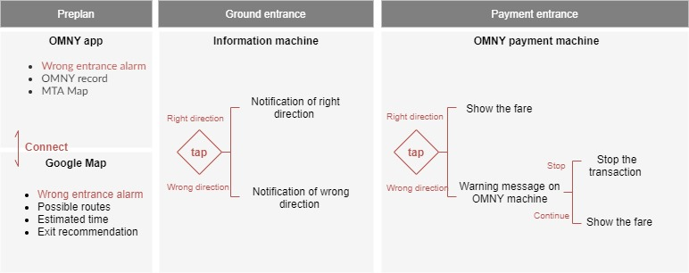

In what ways can we use different AI and ML techniques to continue to build out IDA pipeline processing?
.
.
Creating a well-researched, contextualized report in a short period of time.
Before getting into my prototype design, I'd like to mention two relevant designs in competitive analysis. Omny, you might see it in some MTA stations. It’s a tap-to-pay system using contactless cards or smart devices to make fare payments at MTA. Although It’s very intuitive, it’s just a charging machine.
I believe everyone has used google map before. For me, I use it almost everyday for not only finding my way but also checking the subway schedule. Overall, google map is very functional and useful, yet there’s a drawback that MTA usually has a lot of entrances but Google map doesn’t show its detail when approaching the entrance. This’s one of the reasons for our problem.

The solution is to extend the OMNY system to a mobile app which includes user's MTA record and preplan system. In the meanwhile, since people are highly dependent on google map when taking MTA, it’ll be more efficient and acceptable for the public adding new functions on the app they’ve already used. Thus, I combine OMNY app and Google Map to create a pre plan system that prevents detour and double payment in the MTA system. Users can use both the OMNY app and Google Map to pre plan your route and set up a detour alarm. Before getting into the entrance, you can tap your phone on the OMNY information machine on the ground and see if it’s the right entrance you want. This prevents users from going down the wrong entrace. Also, You're able to check again before entering the platform, so the chance of duplicate payment can be greatly reduced.
I was inspired by the cooperation mode between google map and uber. Google map provides the uber option when planning routes, and once you click it will connect to the Uber app directly.
